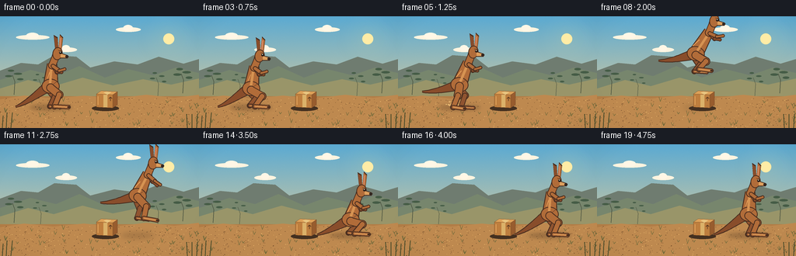
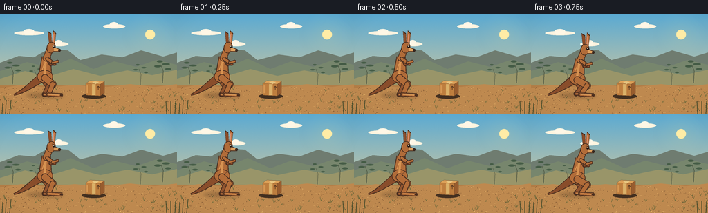

CODING AGENTS AS PIXEL WORLD MODELS
traex/GPT-5.6-Sol · dynamic_spatial_relationship_0032
点击播放 · 原生 RGB 像素
逐轮保存的候选
回放视频、检查图与代码变化。
每份候选均可单独播放。实际图片检查记录在下方工具轨迹中。
候选 01播放与检查图
点击播放 · 原生 RGB 像素

展开代码变化
--- 上一保存版本
+++ 本次保存版本
@@ -0,0 +1,286 @@
+from pathlib import Path
+import json, math
+import numpy as np
+from PIL import Image, ImageDraw, ImageFilter
+import artifact_io
+
+CASE_DIR = Path(__file__).resolve().parent
+SPEC = json.loads((CASE_DIR / 'task_spec.json').read_text())
+W, H, N = SPEC['width'], SPEC['height'], SPEC['frames']
+S = 4
+WS, HS = W*S, H*S
+rng = np.random.default_rng(320032)
+
+
+def sc(v):
+ return int(round(v*S))
+
+def pts(seq):
+ return [(sc(x), sc(y)) for x, y in seq]
+
+def lerp(a,b,t): return a + (b-a)*t
+
+def bezier(p0,p1,p2,p3,t):
+ u=1-t
+ return (u**3*np.array(p0)+3*u*u*t*np.array(p1)+3*u*t*t*np.array(p2)+t**3*np.array(p3))
+
+def ribbon(draw, control, widths, fill, outline=None, outline_w=1.0):
+ samples=[]
+ for k in range(25):
+ t=k/24
+ p=bezier(*control,t)
+ d=bezier(*control,min(1,t+.015))-bezier(*control,max(0,t-.015))
+ ln=max(1e-5,float(np.hypot(d[0],d[1])))
+ n=np.array([-d[1],d[0]])/ln
+ w=lerp(widths[0],widths[1],t)
+ samples.append((p,n,w))
+ poly=[tuple(p+n*w) for p,n,w in samples]+[tuple(p-n*w) for p,n,w in reversed(samples)]
+ if outline:
+ draw.polygon(pts(poly),fill=outline)
+ # inset-colored body makes a clean, softly varying outline
+ inner=[]
+ for p,n,w in samples: inner.append(tuple(p+n*max(0,w-outline_w)))
+ inner += [tuple(p-n*max(0,w-outline_w)) for p,n,w in reversed(samples)]
+ draw.polygon(pts(inner),fill=fill)
+ else:
+ draw.polygon(pts(poly),fill=fill)
+
+def rot_ellipse(base, cx, cy, rx, ry, angle, fill, outline=None, ow=1.0):
+ pad=4
+ ww=int((rx+pad)*2*S); hh=int((ry+pad)*2*S)
+ lay=Image.new('RGBA',(ww,hh),(0,0,0,0)); d=ImageDraw.Draw(lay)
+ box=(sc(pad),sc(pad),sc(pad+2*rx),sc(pad+2*ry))
+ d.ellipse(box,fill=fill,outline=outline,width=max(1,sc(ow)) if outline else 1)
+ lay=lay.rotate(angle,Image.Resampling.BICUBIC,expand=True)
+ base.alpha_composite(lay,(int(cx*S-lay.width/2),int(cy*S-lay.height/2)))
+
+def capsule(draw, a,b,width,fill,outline=None):
+ if outline:
+ draw.line(pts([a,b]),fill=outline,width=sc(width+2),joint='curve')
+ for p in (a,b): draw.ellipse((sc(p[0]-width/2-1),sc(p[1]-width/2-1),sc(p[0]+width/2+1),sc(p[1]+width/2+1)),fill=outline)
+ draw.line(pts([a,b]),fill=fill,width=sc(width),joint='curve')
+ r=width/2
+ for p in (a,b): draw.ellipse((sc(p[0]-r),sc(p[1]-r),sc(p[0]+r),sc(p[1]+r)),fill=fill)
+
+def jointed_limb(draw, points_, widths, fill, outline):
+ # back-to-front tapered segments
+ for j in range(len(points_)-1):
+ capsule(draw,points_[j],points_[j+1],widths[j],fill,outline)
+
+def make_background():
+ # Rich but quiet Australian dawn palette; generated at render resolution.
+ yy=np.linspace(0,1,HS)[:,None,None]
+ top=np.array([91,170,210],dtype=float); bottom=np.array([246,210,145],dtype=float)
+ sky=(top*(1-yy)+bottom*yy)
+ sky=np.repeat(sky,WS,axis=1)
+ noise=rng.normal(0,0.7,(HS,WS,1))
+ arr=np.clip(sky+noise,0,255).astype(np.uint8)
+ bg=Image.fromarray(arr,'RGB').convert('RGBA')
+ d=ImageDraw.Draw(bg,'RGBA')
+ # Sun glow and sun
+ glow=Image.new('RGBA',(WS,HS),(0,0,0,0)); gd=ImageDraw.Draw(glow)
+ for r,a in [(35,4),(27,6),(20,10),(13,20)]:
+ gd.ellipse((sc(217-r),sc(29-r),sc(217+r),sc(29+r)),fill=(255,230,145,a))
+ glow=glow.filter(ImageFilter.GaussianBlur(sc(5))); bg=Image.alpha_composite(bg,glow)
+ d=ImageDraw.Draw(bg,'RGBA')
+ d.ellipse((sc(210),sc(22),sc(224),sc(36)),fill=(255,236,166,225))
+ # wispy clouds
+ for cx,cy,ww in [(42,27,43),(165,17,32),(85,43,28)]:
+ d.ellipse((sc(cx-ww/2),sc(cy-3),sc(cx+ww/2),sc(cy+3)),fill=(255,244,223,50))
+ d.ellipse((sc(cx-ww*.20),sc(cy-6),sc(cx+ww*.18),sc(cy+2)),fill=(255,247,230,42))
+ # distant mesas and rolling ridges
+ d.polygon(pts([(0,70),(27,60),(49,62),(70,50),(98,52),(116,66),(147,58),(177,62),(204,52),(236,61),(256,55),(256,105),(0,105)]),fill=(111,124,112,150))
+ d.polygon(pts([(0,82),(39,69),(72,77),(102,64),(135,79),(165,68),(197,76),(226,66),(256,73),(256,110),(0,110)]),fill=(119,134,109,220))
+ d.polygon(pts([(0,93),(36,82),(69,90),(106,79),(145,89),(184,81),(220,88),(256,80),(256,115),(0,115)]),fill=(153,149,105,255))
+ # distant eucalyptus silhouettes
+ for x,y,scale in [(18,86,.65),(235,84,.7),(203,89,.45),(52,91,.38)]:
+ d.line(pts([(x,y+15),(x+1,y-2),(x-2,y-10)]),fill=(74,82,64,190),width=max(1,sc(1.1*scale)))
+ for dx,dy,rx,ry in [(-7,-9,7,2),(5,-12,8,2),(-4,-16,6,2),(8,-5,6,2)]:
+ d.ellipse((sc(x+dx-rx*scale),sc(y+dy-ry*scale),sc(x+dx+rx*scale),sc(y+dy+ry*scale)),fill=(69,92,70,155))
+ # earth
+ d.rectangle((0,sc(103),WS,HS),fill=(178,125,70,255))
+ d.polygon(pts([(0,107),(31,102),(69,106),(108,102),(146,106),(188,101),(224,105),(256,101),(256,144),(0,144)]),fill=(190,137,79,255))
+ # stable fine ground texture
+ for _ in range(460):
+ x=float(rng.uniform(0,W)); y=float(rng.uniform(105,H))
+ c=(112,75,43,int(rng.integers(18,68))) if rng.random()<.62 else (238,188,111,int(rng.integers(15,55)))
+ r=float(rng.uniform(.15,.6))
+ d.ellipse((sc(x-r),sc(y-r*.45),sc(x+r),sc(y+r*.45)),fill=c)
+ # tufts, concentrated away from center stage
+ for _ in range(62):
+ x=float(rng.uniform(0,W)); y=float(rng.uniform(109,142))
+ if 105<x<205 and y<125: continue
+ h=float(rng.uniform(2,6)); col=(94,99,54,int(rng.integers(90,180)))
+ d.line(pts([(x,y),(x-1.6,y-h)]),fill=col,width=sc(.45))
+ d.line(pts([(x,y),(x+1.8,y-h*.8)]),fill=col,width=sc(.45))
+ # foreground framing grasses
+ for x in [3,8,14,241,247,253]:
+ d.line(pts([(x,144),(x+(x%5-2),128-(x%3)*2)]),fill=(72,76,43,180),width=sc(1.1))
+ return bg
+
+BACKGROUND=make_background()
+
+# Animation keys: hip position. The long first and final holds explicitly establish the relation.
+poses=[
+ (65,92,'stand'),(65,92,'stand'),(66,92,'stand'),(67,95,'prepare'),
+ (69,100,'crouch'),(79,90,'launch'),(93,72,'rise'),(109,58,'rise'),
+ (127,50,'apex'),(145,50,'apex'),(162,56,'fall'),(177,68,'fall'),
+ (188,83,'extend'),(194,95,'land'),(195,99,'crouch'),(195,94,'recover'),
+ (195,92,'stand'),(195,92,'stand'),(195,92,'stand'),(195,92,'stand')]
+
+def draw_box(img):
+ d=ImageDraw.Draw(img,'RGBA')
+ # Small cardboard box, strongly legible as a 3D cube.
+ d.ellipse((sc(118),sc(115),sc(153),sc(122)),fill=(68,48,32,45))
+ # front, side, top
+ d.polygon(pts([(124,100),(145,101),(145,118),(124,117)]),fill=(190,126,62,255),outline=(91,58,32,255))
+ d.polygon(pts([(145,101),(151,97),(151,114),(145,118)]),fill=(151,92,46,255),outline=(91,58,32,255))
+ d.polygon(pts([(124,100),(130,96),(151,97),(145,101)]),fill=(222,161,88,255),outline=(91,58,32,255))
+ # parcel tape and highlights
+ d.polygon(pts([(133,98),(138,97),(143,98),(138,101)]),fill=(232,197,128,210))
+ d.polygon(pts([(133,101),(138,101),(138,117),(133,117)]),fill=(219,177,105,205))
+ d.line(pts([(126,103),(126,114)]),fill=(235,177,105,95),width=sc(.7))
+ # tiny handling mark, no text
+ d.line(pts([(142,109),(142,104),(140,106),(142,104),(144,106)]),fill=(92,57,32,190),width=sc(.75))
+
+def limb_pose(kind):
+ if kind=='stand':
+ return [((0,0),(11,9),(5,24),(23,25)),((-3,1),(5,11),(-1,24),(13,25))]
+ if kind=='prepare':
+ return [((0,0),(14,8),(5,21),(22,22)),((-3,1),(6,10),(-2,20),(11,21))]
+ if kind in ('crouch','land'):
+ return [((0,0),(15,4),(5,16),(23,17)),((-3,1),(7,5),(-3,15),(12,17))]
+ if kind=='launch':
+ return [((0,0),(-2,12),(-8,27),(6,29)),((-3,0),(7,12),(2,27),(18,28))]
+ if kind=='rise':
+ return [((0,0),(-3,13),(-13,24),(2,27)),((-3,0),(8,11),(1,22),(18,25))]
+ if kind=='apex':
+ return [((0,0),(13,8),(4,18),(20,20)),((-3,0),(5,12),(-2,21),(14,22))]
+ if kind=='fall':
+ return [((0,0),(11,12),(8,27),(25,30)),((-3,0),(3,14),(-1,27),(14,29))]
+ if kind=='extend':
+ return [((0,0),(9,13),(10,29),(26,32)),((-3,0),(1,14),(0,29),(15,31))]
+ if kind=='recover':
+ return [((0,0),(12,9),(5,23),(23,24)),((-3,1),(5,11),(-2,23),(12,24))]
+
+def addp(o,p): return (o[0]+p[0],o[1]+p[1])
+
+def draw_kangaroo(img, hip, kind, frame_i):
+ x,y=hip
+ outline=(72,45,31,255)
+ fur=(177,108,57,255); fur_dark=(137,77,43,255); fur_light=(221,160,94,255)
+ d=ImageDraw.Draw(img,'RGBA')
+ airborne=kind in ('launch','rise','apex','fall','extend')
+ # lean gives the leap a readable forward direction
+ lean={'stand':2,'prepare':4,'crouch':7,'launch':11,'rise':15,'apex':17,'fall':13,'extend':8,'land':7,'recover':3}.get(kind,2)
+ shoulder=(x+lean,y-31 if kind not in ('crouch','land') else y-26)
+ chest=(x+lean*.55,y-18 if kind not in ('crouch','land') else y-14)
+ # Tail behind everything: a defining kangaroo silhouette.
+ if airborne:
+ end=(x-48,y+7); c1=(x-13,y+2); c2=(x-33,y+8)
+ elif kind in ('crouch','land','prepare'):
+ end=(x-43,116.5); c1=(x-15,y+5); c2=(x-30,113)
+ else:
+ end=(x-45,116.5); c1=(x-13,y+5); c2=(x-31,112)
+ ribbon(d,[(x-4,y-1),c1,c2,end],(7.2,1.3),fur_dark,outline,1.0)
+ # far hind leg
+ lp=limb_pose(kind)
+ far=[addp(hip,p) for p in lp[1]]
+ jointed_limb(d,far,[8,5,3.2],(144,84,48,255),outline)
+ # pale sole on far foot
+ d.line(pts([far[-2],far[-1]]),fill=(204,139,78,180),width=sc(1.5))
+ # tapered torso
+ axis=np.array(shoulder)-np.array((x,y)); length=np.hypot(*axis); n=np.array([-axis[1],axis[0]])/length
+ hipc=np.array((x,y-2)); sh=np.array(shoulder)
+ poly=[hipc+n*10, sh+n*6.5, sh-n*6.5, hipc-n*10]
+ d.polygon(pts(poly),fill=outline)
+ inner=[hipc+n*8.8,sh+n*5.5,sh-n*5.5,hipc-n*8.8]
+ d.polygon(pts(inner),fill=fur)
+ rot_ellipse(img,x,y-2,11.5,9.5,-lean*.6,fur,outline,1)
+ d=ImageDraw.Draw(img,'RGBA')
+ # belly/chest warm highlight
+ belly0=(x+lean*.22-1,y-7); belly1=(shoulder[0]-1,shoulder[1]+4)
+ capsule(d,belly0,belly1,3.2,(214,147,82,150),None)
+ # near powerful hind leg
+ near=[addp(hip,p) for p in lp[0]]
+ jointed_limb(d,near,[9,5.8,3.7],fur,outline)
+ # angular hock and long foot accents
+ d.line(pts([near[-2],near[-1]]),fill=fur_light,width=sc(1.3))
+ d.ellipse((sc(near[-1][0]-1.4),sc(near[-1][1]-1.3),sc(near[-1][0]+2),sc(near[-1][1]+1.3)),fill=outline)
+ # neck rising from shoulder
+ head_base=(shoulder[0]+5,shoulder[1]-10)
+ capsule(d,(shoulder[0],shoulder[1]+2),head_base,8.3,fur,outline)
+ # arms: small, unmistakable kangaroo forearms
+ arm_root=(shoulder[0]+1,shoulder[1]+3)
+ if kind in ('rise','apex'):
+ elbow=(arm_root[0]+9,arm_root[1]+4); paw=(elbow[0]+8,elbow[1]-1)
+ elbow2=(arm_root[0]+6,arm_root[1]+7); paw2=(elbow2[0]+7,elbow2[1]+1)
+ elif kind in ('fall','extend'):
+ elbow=(arm_root[0]+8,arm_root[1]+7); paw=(elbow[0]+7,elbow[1]+5)
+ elbow2=(arm_root[0]+5,arm_root[1]+8); paw2=(elbow2[0]+6,elbow2[1]+5)
+ else:
+ elbow=(arm_root[0]+8,arm_root[1]+6); paw=(elbow[0]+7,elbow[1]-2)
+ elbow2=(arm_root[0]+5,arm_root[1]+8); paw2=(elbow2[0]+6,elbow2[1])
+ jointed_limb(d,[arm_root,elbow2,paw2],[3.3,2.3],fur_dark,outline)
+ jointed_limb(d,[arm_root,elbow,paw],[3.7,2.5],fur,outline)
+ # head, ears, and muzzle
+ head=(head_base[0]+2,head_base[1]-3)
+ # rear ear then front ear; gentle ear twitch during holds
+ twitch=math.sin(frame_i*.8)*.8 if kind=='stand' else 0
+ ear_rear=[(head[0]-3,head[1]-5),(head[0]-5+twitch,head[1]-24),(head[0],head[1]-21),(head[0]+1,head[1]-5)]
+ ear_front=[(head[0]+1,head[1]-5),(head[0]+3-twitch*.3,head[1]-25),(head[0]+7,head[1]-21),(head[0]+5,head[1]-4)]
+ d.polygon(pts(ear_rear),fill=outline); d.polygon(pts([(a*.92+head[0]*.08,b*.92+head[1]*.08) for a,b in ear_rear]),fill=fur_dark)
+ d.polygon(pts(ear_front),fill=outline); d.polygon(pts([(a*.94+head[0]*.06,b*.94+head[1]*.06) for a,b in ear_front]),fill=fur)
+ d.line(pts([(head[0]+3,head[1]-7),(head[0]+4,head[1]-20)]),fill=(230,148,119,170),width=sc(1.1))
+ rot_ellipse(img,head[0],head[1],6.4,8.3,-9,fur,outline,1)
+ d=ImageDraw.Draw(img,'RGBA')
+ muzzle=[(head[0]+4,head[1]-1),(head[0]+13,head[1]+2),(head[0]+13,head[1]+6),(head[0]+4,head[1]+6)]
+ d.polygon(pts(muzzle),fill=outline)
+ inner=[(head[0]+4,head[1]),(head[0]+12,head[1]+2.5),(head[0]+12,head[1]+5),(head[0]+4,head[1]+5)]
+ d.polygon(pts(inner),fill=fur_light)
+ d.ellipse((sc(head[0]+10),sc(head[1]+2),sc(head[0]+14),sc(head[1]+5.6)),fill=(52,39,32,255))
+ # bright, expressive eye and brow
+ d.ellipse((sc(head[0]+2),sc(head[1]-3),sc(head[0]+5.5),sc(head[1]+.4)),fill=(43,31,25,255))
+ d.ellipse((sc(head[0]+3),sc(head[1]-2.5),sc(head[0]+4),sc(head[1]-1.5)),fill=(255,246,217,255))
+ d.line(pts([(head[0]+1,head[1]-4),(head[0]+6,head[1]-3.5)]),fill=outline,width=sc(.65))
+ # sparse fur accents, following torso
+ d.line(pts([(x-4,y-12),(x+lean*.4-2,y-20)]),fill=(237,170,97,90),width=sc(.65))
+ d.line(pts([(x+4,y-5),(x+8,y-8)]),fill=(101,61,39,80),width=sc(.6))
+
+def dust(img, x, strength, frame_i):
+ if strength<=0: return
+ d=ImageDraw.Draw(img,'RGBA')
+ local=np.random.default_rng(900+frame_i)
+ for k in range(9):
+ dx=float(local.normal(0,7))*strength; dy=float(local.uniform(-7,-1))*strength
+ r=float(local.uniform(.8,2.4))*strength
+ d.ellipse((sc(x+dx-r),sc(116+dy-r*.5),sc(x+dx+r),sc(116+dy+r*.5)),fill=(229,181,111,int(75*strength)))
+
+def render_frame(i):
+ img=BACKGROUND.copy()
+ x,y,kind=poses[i]
+ # Contact/flight shadow (drawn before box and character), shrinking and softening with altitude.
+ alt=max(0,92-y)
+ shadow=Image.new('RGBA',(WS,HS),(0,0,0,0)); sd=ImageDraw.Draw(shadow)
+ sw=max(9,27-alt*.25); alpha=int(max(18,65-alt*.8))
+ sd.ellipse((sc(x-sw),sc(114),sc(x+sw),sc(121)),fill=(58,38,27,alpha))
+ shadow=shadow.filter(ImageFilter.GaussianBlur(sc(2.3+alt*.025)))
+ img=Image.alpha_composite(img,shadow)
+ draw_box(img)
+ if i in (5,6): dust(img,71,1-(i-5)*.35,i)
+ if i in (13,14,15): dust(img,195,[.55,1,.5][i-13],i)
+ draw_kangaroo(img,(x,y),kind,i)
+ # Very subtle vignette for depth, never obscuring the action.
+ yy,xx=np.ogrid[:HS,:WS]
+ cx,cy=WS*.5,HS*.47
+ dist=((xx-cx)/(WS*.72))**2+((yy-cy)/(HS*.85))**2
+ a=np.clip((dist-.46)*28,0,18).astype(np.uint8)
+ vig=np.zeros((HS,WS,4),dtype=np.uint8); vig[...,3]=a
+ img=Image.alpha_composite(img,Image.fromarray(vig,'RGBA'))
+ img=img.convert('RGB').resize((W,H),Image.Resampling.LANCZOS)
+ return np.asarray(img,dtype=np.uint8)
+
+frames=np.stack([render_frame(i) for i in range(N)],axis=0)
+assert frames.shape==(N,H,W,3) and frames.dtype==np.uint8
+artifact_io.save(frames,CASE_DIR)
+print(f'saved {frames.shape} RGB frames; range={frames.min()}..{frames.max()}')
候选 02播放与检查图
点击播放 · 原生 RGB 像素


展开代码变化
--- 上一保存版本
+++ 本次保存版本
@@ -123,10 +123,10 @@
# Animation keys: hip position. The long first and final holds explicitly establish the relation.
poses=[
(65,92,'stand'),(65,92,'stand'),(66,92,'stand'),(67,95,'prepare'),
- (69,100,'crouch'),(79,90,'launch'),(93,72,'rise'),(109,58,'rise'),
- (127,50,'apex'),(145,50,'apex'),(162,56,'fall'),(177,68,'fall'),
- (188,83,'extend'),(194,95,'land'),(195,99,'crouch'),(195,94,'recover'),
- (195,92,'stand'),(195,92,'stand'),(195,92,'stand'),(195,92,'stand')]
+ (69,100,'crouch'),(79,90,'launch'),(93,81,'rise'),(109,72,'rise'),
+ (127,69,'apex'),(145,69,'apex'),(162,73,'fall'),(180,79,'fall'),
+ (193,86,'extend'),(199,95,'land'),(200,99,'crouch'),(201,94,'recover'),
+ (202,92,'stand'),(202,92,'stand'),(202,92,'stand'),(202,92,'stand')]
def draw_box(img):
d=ImageDraw.Draw(img,'RGBA')
候选 03播放与检查图
可观测工具轨迹
实际执行的命令与返回图片。
命令 1exit 0
/bin/bash -lc "cat prompt.txt && printf '\\n--- GENERATION_RULES.md ---\\n' && cat GENERATION_RULES.md && printf '\\n--- task_spec.json ---\\n' && cat task_spec.json"
命令 2exit 1
/bin/bash -lc "find . -maxdepth 2 -type f -printf '%p\\n' | sort && printf '\\n--- tools ---\\n' && command -v ffmpeg && command -v ffprobe && command -v python3"
命令 3exit 0
/bin/bash -lc "cat artifact_io.py && python3 - <<'PY'
try:
import numpy; print('numpy',numpy.__version__)
except Exception as e: print(e)
try:
from PIL import Image, ImageDraw, ImageFilter
print('PIL ok')
except Exception as e: print(e)
PY"命令 4exit 1
/bin/bash -lc "cat > generate.py <<'PY'
from pathlib import Path
import json, math
import numpy as np
from PIL import Image, ImageDraw, ImageFilter
import artifact_io
CASE_DIR = Path(__file__).resolve().parent
SPEC = json.loads((CASE_DIR / 'task_spec.json').read_text())
W, H, N = SPEC['width'], SPEC['height'], SPEC['frames']
S = 4
WS, HS = W*S, H*S
rng = np.random.default_rng(320032)
def sc(v):
return int(round(v*S))
def pts(seq):
return [(sc(x), sc(y)) for x, y in seq]
def lerp(a,b,t): return a + (b-a)*t
def bezier(p0,p1,p2,p3,t):
u=1-t
return (u**3*np.array(p0)+3*u*u*t*np.array(p1)+3*u*t*t*np.array(p2)+t**3*np.array(p3))
def ribbon(draw, control, widths, fill, outline=None, outline_w=1.0):
samples=[]
for k in range(25):
t=k/24
p=bezier(*control,t)
d=bezier(*control,min(1,t+.015))-bezier(*control,max(0,t-.015))
ln=max(1e-5,float(np.hypot(d[0],d[1])))
n=np.array([-d[1],d[0]])/ln
w=lerp(widths[0],widths[1],t)
samples.append((p,n,w))
poly=[tuple(p+n*w for p,n,w in samples)]+[tuple(p-n*w for p,n,w in reversed(samples))]
if outline:
draw.polygon(pts(poly),fill=outline)
# inset-colored body makes a clean, softly varying outline
inner=[]
for p,n,w in samples: inner.append(tuple(p+n*max(0,w-outline_w) for p,n,w in [(p,n,w)]))
inner += [tuple(p-n*max(0,w-outline_w) for p,n,w in [(p,n,w)]) for p,n,w in reversed(samples)]
draw.polygon(pts(inner),fill=fill)
else:
draw.polygon(pts(poly),fill=fill)
def rot_ellipse(base, cx, cy, rx, ry, angle, fill, outline=None, ow=1.0):
pad=4
ww=int((rx+pad)*2*S); hh=int((ry+pad)*2*S)
lay=Image.new('RGBA',(ww,hh),(0,0,0,0)); d=ImageDraw.Draw(lay)
box=(sc(pad),sc(pad),sc(pad+2*rx),sc(pad+2*ry))
d.ellipse(box,fill=fill,outline=outline,width=max(1,sc(ow)) if outline else 1)
lay=lay.rotate(angle,Image.Resampling.BICUBIC,expand=True)
base.alpha_composite(lay,(int(cx*S-lay.width/2),int(cy*S-lay.height/2)))
def capsule(draw, a,b,width,fill,outline=None):
if outline:
draw.line(pts([a,b]),fill=outline,width=sc(width+2),joint='curve')
for p in (a,b): draw.ellipse((sc(p[0]-width/2-1),sc(p[1]-width/2-1),sc(p[0]+width/2+1),sc(p[1]+width/2+1)),fill=outline)
draw.line(pts([a,b]),fill=fill,width=sc(width),joint='curve')
r=width/2
for p in (a,b): draw.ellipse((sc(p[0]-r),sc(p[1]-r),sc(p[0]+r),sc(p[1]+r)),fill=fill)
def jointed_limb(draw, points_, widths, fill, outline):
# back-to-front tapered segments
for j in range(len(points_)-1):
capsule(draw,points_[j],points_[j+1],widths[j],fill,outline)
def make_background():
# Rich but quiet Australian dawn palette; generated at render resolution.
yy=np.linspace(0,1,HS)[:,None,None]
top=np.array([91,170,210],dtype=float); bottom=np.array([246,210,145],dtype=float)
sky=(top*(1-yy)+bottom*yy)
sky=np.repeat(sky,WS,axis=1)
noise=rng.normal(0,0.7,(HS,WS,1))
arr=np.clip(sky+noise,0,255).astype(np.uint8)
bg=Image.fromarray(arr,'RGB').convert('RGBA')
d=ImageDraw.Draw(bg,'RGBA')
# Sun glow and sun
glow=Image.new('RGBA',(WS,HS),(0,0,0,0)); gd=ImageDraw.Draw(glow)
for r,a in [(35,4),(27,6),(20,10),(13,20)]:
gd.ellipse((sc(217-r),sc(29-r),sc(217+r),sc(29+r)),fill=(255,230,145,a))
glow=glow.filter(ImageFilter.GaussianBlur(sc(5))); bg=Image.alpha_composite(bg,glow)
d=ImageDraw.Draw(bg,'RGBA')
d.ellipse((sc(210),sc(22),sc(224),sc(36)),fill=(255,236,166,225))
# wispy clouds
for cx,cy,ww in [(42,27,43),(165,17,32),(85,43,28)]:
d.ellipse((sc(cx-ww/2),sc(cy-3),sc(cx+ww/2),sc(cy+3)),fill=(255,244,223,50))
d.ellipse((sc(cx-ww*.20),sc(cy-6),sc(cx+ww*.18),sc(cy+2)),fill=(255,247,230,42))
# distant mesas and rolling ridges
d.polygon(pts([(0,70),(27,60),(49,62),(70,50),(98,52),(116,66),(147,58),(177,62),(204,52),(236,61),(256,55),(256,105),(0,105)]),fill=(111,124,112,150))
d.polygon(pts([(0,82),(39,69),(72,77),(102,64),(135,79),(165,68),(197,76),(226,66),(256,73),(256,110),(0,110)]),fill=(119,134,109,220))
d.polygon(pts([(0,93),(36,82),(69,90),(106,79),(145,89),(184,81),(220,88),(256,80),(256,115),(0,115)]),fill=(153,149,105,255))
# distant eucalyptus silhouettes
for x,y,scale in [(18,86,.65),(235,84,.7),(203,89,.45),(52,91,.38)]:
d.line(pts([(x,y+15),(x+1,y-2),(x-2,y-10)]),fill=(74,82,64,190),width=max(1,sc(1.1*scale)))
for dx,dy,rx,ry in [(-7,-9,7,2),(5,-12,8,2),(-4,-16,6,2),(8,-5,6,2)]:
d.ellipse((sc(x+dx-rx*scale),sc(y+dy-ry*scale),sc(x+dx+rx*scale),sc(y+dy+ry*scale)),fill=(69,92,70,155))
# earth
d.rectangle((0,sc(103),WS,HS),fill=(178,125,70,255))
d.polygon(pts([(0,107),(31,102),(69,106),(108,102),(146,106),(188,101),(224,105),(256,101),(256,144),(0,144)]),fill=(190,137,79,255))
# stable fine ground texture
for _ in range(460):
x=float(rng.uniform(0,W)); y=float(rng.uniform(105,H))
c=(112,75,43,int(rng.integers(18,68))) if rng.random()<.62 else (238,188,111,int(rng.integers(15,55)))
r=float(rng.uniform(.15,.6))
d.ellipse((sc(x-r),sc(y-r*.45),sc(x+r),sc(y+r*.45)),fill=c)
# tufts, concentrated away from center stage
for _ in range(62):
x=float(rng.uniform(0,W)); y=float(rng.uniform(109,142))
if 105<x<205 and y<125: continue
h=float(rng.uniform(2,6)); col=(94,99,54,int(rng.integers(90,180)))
d.line(pts([(x,y),(x-1.6,y-h)]),fill=col,width=sc(.45))
d.line(pts([(x,y),(x+1.8,y-h*.8)]),fill=col,width=sc(.45))
# foreground framing grasses
for x in [3,8,14,241,247,253]:
d.line(pts([(x,144),(x+(x%5-2),128-(x%3)*2)]),fill=(72,76,43,180),width=sc(1.1))
return bg
BACKGROUND=make_background()
# Animation keys: hip position. The long first and final holds explicitly establish the relation.
poses=[
(65,92,'stand'),(65,92,'stand'),(66,92,'stand'),(67,95,'prepare'),
(69,100,'crouch'),(79,90,'launch'),(93,72,'rise'),(109,58,'rise'),
(127,50,'apex'),(145,50,'apex'),(162,56,'fall'),(177,68,'fall'),
(188,83,'extend'),(194,95,'land'),(195,99,'crouch'),(195,94,'recover'),
(195,92,'stand'),(195,92,'stand'),(195,92,'stand'),(195,92,'stand')]
def draw_box(img):
d=ImageDraw.Draw(img,'RGBA')
# Small cardboard box, strongly legible as a 3D cube.
d.ellipse((sc(118),sc(115),sc(153),sc(122)),fill=(68,48,32,45))
# front, side, top
d.polygon(pts([(124,100),(145,101),(145,118),(124,117)]),fill=(190,126,62,255),outline=(91,58,32,255))
d.polygon(pts([(145,101),(151,97),(151,114),(145,118)]),fill=(151,92,46,255),outline=(91,58,32,255))
d.polygon(pts([(124,100),(130,96),(151,97),(145,101)]),fill=(222,161,88,255),outline=(91,58,32,255))
# parcel tape and highlights
d.polygon(pts([(133,98),(138,97),(143,98),(138,101)]),fill=(232,197,128,210))
d.polygon(pts([(133,101),(138,101),(138,117),(133,117)]),fill=(219,177,105,205))
d.line(pts([(126,103),(126,114)]),fill=(235,177,105,95),width=sc(.7))
# tiny handling mark, no text
d.line(pts([(142,109),(142,104),(140,106),(142,104),(144,106)]),fill=(92,57,32,190),width=sc(.75))
def limb_pose(kind):
if kind=='stand':
return [((0,0),(11,9),(5,24),(23,25)),((-3,1),(5,11),(-1,24),(13,25))]
if kind=='prepare':
return [((0,0),(14,8),(5,21),(22,22)),((-3,1),(6,10),(-2,20),(11,21))]
if kind in ('crouch','land'):
return [((0,0),(15,4),(5,16),(23,17)),((-3,1),(7,5),(-3,15),(12,17))]
if kind=='launch':
return [((0,0),(-2,12),(-8,27),(6,29)),((-3,0),(7,12),(2,27),(18,28))]
if kind=='rise':
return [((0,0),(-3,13),(-13,24),(2,27)),((-3,0),(8,11),(1,22),(18,25))]
if kind=='apex':
return [((0,0),(13,8),(4,18),(20,20)),((-3,0),(5,12),(-2,21),(14,22))]
if kind=='fall':
return [((0,0),(11,12),(8,27),(25,30)),((-3,0),(3,14),(-1,27),(14,29))]
if kind=='extend':
return [((0,0),(9,13),(10,29),(26,32)),((-3,0),(1,14),(0,29),(15,31))]
if kind=='recover':
return [((0,0),(12,9),(5,23),(23,24)),((-3,1),(5,11),(-2,23),(12,24))]
def addp(o,p): return (o[0]+p[0],o[1]+p[1])
def draw_kangaroo(img, hip, kind, frame_i):
x,y=hip
outline=(72,45,31,255)
fur=(177,108,57,255); fur_dark=(137,77,43,255); fur_light=(221,160,94,255)
d=ImageDraw.Draw(img,'RGBA')
airborne=kind in ('launch','rise','apex','fall','extend')
# lean gives the leap a readable forward direction
lean={'stand':2,'prepare':4,'crouch':7,'launch':11,'rise':15,'apex':17,'fall':13,'extend':8,'land':7,'recover':3}.get(kind,2)
shoulder=(x+lean,y-31 if kind not in ('crouch','land') else y-26)
chest=(x+lean*.55,y-18 if kind not in ('crouch','land') else y-14)
# Tail behind everything: a defining kangaroo silhouette.
if airborne:
end=(x-48,y+7); c1=(x-13,y+2); c2=(x-33,y+8)
elif kind in ('crouch','land','prepare'):
end=(x-43,116.5); c1=(x-15,y+5); c2=(x-30,113)
else:
end=(x-45,116.5); c1=(x-13,y+5); c2=(x-31,112)
ribbon(d,[(x-4,y-1),c1,c2,end],(7.2,1.3),fur_dark,outline,1.0)
# far hind leg
lp=limb_pose(kind)
far=[addp(hip,p) for p in lp[1]]
jointed_limb(d,far,[8,5,3.2],(144,84,48,255),outline)
# pale sole on far foot
d.line(pts([far[-2],far[-1]]),fill=(204,139,78,180),width=sc(1.5))
# tapered torso
axis=np.array(shoulder)-np.array((x,y)); length=np.hypot(*axis); n=np.array([-axis[1],axis[0]])/length
hipc=np.array((x,y-2)); sh=np.array(shoulder)
poly=[hipc+n*10, sh+n*6.5, sh-n*6.5, hipc-n*10]
d.polygon(pts(poly),fill=outline)
inner=[hipc+n*8.8,sh+n*5.5,sh-n*5.5,hipc-n*8.8]
d.polygon(pts(inner),fill=fur)
rot_ellipse(img,x,y-2,11.5,9.5,-lean*.6,fur,outline,1)
d=ImageDraw.Draw(img,'RGBA')
# belly/chest warm highlight
belly0=(x+lean*.22-1,y-7); belly1=(shoulder[0]-1,shoulder[1]+4)
capsule(d,belly0,belly1,3.2,(214,147,82,150),None)
# near powerful hind leg
near=[addp(hip,p) for p in lp[0]]
jointed_limb(d,near,[9,5.8,3.7],fur,outline)
# angular hock and long foot accents
d.line(pts([near[-2],near[-1]]),fill=fur_light,width=sc(1.3))
d.ellipse((sc(near[-1][0]-1.4),sc(near[-1][1]-1.3),sc(near[-1][0]+2),sc(near[-1][1]+1.3)),fill=outline)
# neck rising from shoulder
head_base=(shoulder[0]+5,shoulder[1]-10)
capsule(d,(shoulder[0],shoulder[1]+2),head_base,8.3,fur,outline)
# arms: small, unmistakable kangaroo forearms
arm_root=(shoulder[0]+1,shoulder[1]+3)
if kind in ('rise','apex'):
elbow=(arm_root[0]+9,arm_root[1]+4); paw=(elbow[0]+8,elbow[1]-1)
elbow2=(arm_root[0]+6,arm_root[1]+7); paw2=(elbow2[0]+7,elbow2[1]+1)
elif kind in ('fall','extend'):
elbow=(arm_root[0]+8,arm_root[1]+7); paw=(elbow[0]+7,elbow[1]+5)
elbow2=(arm_root[0]+5,arm_root[1]+8); paw2=(elbow2[0]+6,elbow2[1]+5)
else:
elbow=(arm_root[0]+8,arm_root[1]+6); paw=(elbow[0]+7,elbow[1]-2)
elbow2=(arm_root[0]+5,arm_root[1]+8); paw2=(elbow2[0]+6,elbow2[1])
jointed_limb(d,[arm_root,elbow2,paw2],[3.3,2.3],fur_dark,outline)
jointed_limb(d,[arm_root,elbow,paw],[3.7,2.5],fur,outline)
# head, ears, and muzzle
head=(head_base[0]+2,head_base[1]-3)
# rear ear then front ear; gentle ear twitch during holds
twitch=math.sin(frame_i*.8)*.8 if kind=='stand' else 0
ear_rear=[(head[0]-3,head[1]-5),(head[0]-5+twitch,head[1]-24),(head[0],head[1]-21),(head[0]+1,head[1]-5)]
ear_front=[(head[0]+1,head[1]-5),(head[0]+3-twitch*.3,head[1]-25),(head[0]+7,head[1]-21),(head[0]+5,head[1]-4)]
d.polygon(pts(ear_rear),fill=outline); d.polygon(pts([(a*.92+head[0]*.08,b*.92+head[1]*.08) for a,b in ear_rear]),fill=fur_dark)
d.polygon(pts(ear_front),fill=outline); d.polygon(pts([(a*.94+head[0]*.06,b*.94+head[1]*.06) for a,b in ear_front]),fill=fur)
d.line(pts([(head[0]+3,head[1]-7),(head[0]+4,head[1]-20)]),fill=(230,148,119,170),width=sc(1.1))
rot_ellipse(img,head[0],head[1],6.4,8.3,-9,fur,outline,1)
d=ImageDraw.Draw(img,'RGBA')
muzzle=[(head[0]+4,head[1]-1),(head[0]+13,head[1]+2),(head[0]+13,head[1]+6),(head[0]+4,head[1]+6)]
d.polygon(pts(muzzle),fill=outline)
inner=[(head[0]+4,head[1]),(head[0]+12,head[1]+2.5),(head[0]+12,head[1]+5),(head[0]+4,head[1]+5)]
d.polygon(pts(inner),fill=fur_light)
d.ellipse((sc(head[0]+10),sc(head[1]+2),sc(head[0]+14),sc(head[1]+5.6)),fill=(52,39,32,255))
# bright, expressive eye and brow
d.ellipse((sc(head[0]+2),sc(head[1]-3),sc(head[0]+5.5),sc(head[1]+.4)),fill=(43,31,25,255))
d.ellipse((sc(head[0]+3),sc(head[1]-2.5),sc(head[0]+4),sc(head[1]-1.5)),fill=(255,246,217,255))
d.line(pts([(head[0]+1,head[1]-4),(head[0]+6,head[1]-3.5)]),fill=outline,width=sc(.65))
# sparse fur accents, following torso
d.line(pts([(x-4,y-12),(x+lean*.4-2,y-20)]),fill=(237,170,97,90),width=sc(.65))
d.line(pts([(x+4,y-5),(x+8,y-8)]),fill=(101,61,39,80),width=sc(.6))
def dust(img, x, strength, frame_i):
if strength<=0: return
d=ImageDraw.Draw(img,'RGBA')
local=np.random.default_rng(900+frame_i)
for k in range(9):
dx=float(local.normal(0,7))*strength; dy=float(local.uniform(-7,-1))*strength
r=float(local.uniform(.8,2.4))*strength
d.ellipse((sc(x+dx-r),sc(116+dy-r*.5),sc(x+dx+r),sc(116+dy+r*.5)),fill=(229,181,111,int(75*strength)))
def render_frame(i):
img=BACKGROUND.copy()
x,y,kind=poses[i]
# Contact/flight shadow (drawn before box and character), shrinking and softening with altitude.
alt=max(0,92-y)
shadow=Image.new('RGBA',(WS,HS),(0,0,0,0)); sd=ImageDraw.Draw(shadow)
sw=max(9,27-alt*.25); alpha=int(max(18,65-alt*.8))
sd.ellipse((sc(x-sw),sc(114),sc(x+sw),sc(121)),fill=(58,38,27,alpha))
shadow=shadow.filter(ImageFilter.GaussianBlur(sc(2.3+alt*.025)))
img=Image.alpha_composite(img,shadow)
draw_box(img)
if i in (5,6): dust(img,71,1-(i-5)*.35,i)
if i in (13,14,15): dust(img,195,[.55,1,.5][i-13],i)
draw_kangaroo(img,(x,y),kind,i)
# Very subtle vignette for depth, never obscuring the action.
yy,xx=np.ogrid[:HS,:WS]
cx,cy=WS*.5,HS*.47
dist=((xx-cx)/(WS*.72))**2+((yy-cy)/(HS*.85))**2
a=np.clip((dist-.46)*28,0,18).astype(np.uint8)
vig=np.zeros((HS,WS,4),dtype=np.uint8); vig[...,3]=a
img=Image.alpha_composite(img,Image.fromarray(vig,'RGBA'))
img=img.convert('RGB').resize((W,H),Image.Resampling.LANCZOS)
return np.asarray(img,dtype=np.uint8)
frames=np.stack([render_frame(i) for i in range(N)],axis=0)
assert frames.shape==(N,H,W,3) and frames.dtype==np.uint8
artifact_io.save(frames,CASE_DIR)
print(f'saved {frames.shape} RGB frames; range={frames.min()}..{frames.max()}')
PY
python3 generate.py"命令 5exit 0
/bin/bash -lc 'python3 generate.py'
命令 6exit 0
/bin/bash -lc "python3 generate.py >/tmp/generate.log && cat /tmp/generate.log && python3 - <<'PY'
from pathlib import Path
import numpy as np
from PIL import Image
p=Path('.')
files=sorted((p/'frames').glob('*.png'))
assert len(files)==20
for f in files:
im=Image.open(f)
assert im.mode=='RGB' and im.size==(256,144)
z=np.load('pixels.npz')['pixels']
assert z.shape==(144,256,20) and z.dtype==np.uint32
# Report temporal differences to ensure real animation and held endpoints.
a=np.stack([np.asarray(Image.open(f),dtype=np.int16) for f in files])
d=np.mean(np.abs(np.diff(a,axis=0)),axis=(1,2,3))
print('validated frames:',len(files),'mode RGB, size 256x144')
print('mean adjacent RGB differences:',np.round(d,2).tolist())
print('outputs:', ', '.join(x.name for x in [p/'pixels.npz',p/'inspection.png',p/'transition_check.png',p/'index.html']))
PY
ls -lh pixels.npz inspection.png transition_check.png index.html generate.py"命令 7exit 0
/bin/bash -lc "python3 generate.py >.tmp/generate.log && cat .tmp/generate.log && python3 - <<'PY'
from pathlib import Path
import numpy as np
from PIL import Image
p=Path('.')
files=sorted((p/'frames').glob('*.png'))
assert len(files)==20
for f in files:
im=Image.open(f)
assert im.mode=='RGB' and im.size==(256,144)
z=np.load('pixels.npz')['pixels']
assert z.shape==(144,256,20) and z.dtype==np.uint32
a=np.stack([np.asarray(Image.open(f),dtype=np.int16) for f in files])
d=np.mean(np.abs(np.diff(a,axis=0)),axis=(1,2,3))
print('validated frames:',len(files),'mode RGB, size 256x144')
print('mean adjacent RGB differences:',np.round(d,2).tolist())
print('outputs: pixels.npz, inspection.png, transition_check.png, index.html')
PY
ls -lh pixels.npz inspection.png transition_check.png index.html generate.py"保存候选 3 份；完成命令 7 次；可验证图片返回 0 张。原始 API 响应与完整日志保留在本地。